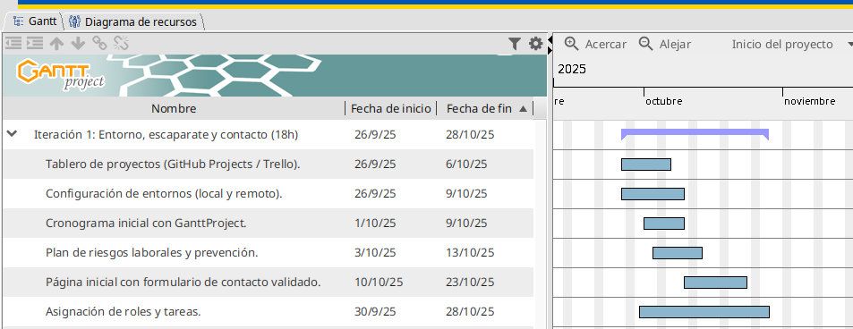
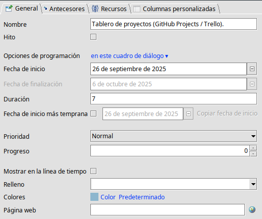

🖥️ Práctica Final : Git + GitHub + VS Code + Formulario Web¶
1️⃣ Gestionar un proyecto con Git y GitHub desde VS Code¶
### ¿Qué debemos tener en cuenta cuando queramos iniciar un proyecto con GitHub?
Principalmente, cuando empiezas un proyecto con Git y GitHub es esencial que uno de los miembros cree una organización y, dentro de él, un repositorio en Github y enlace su repositorio local con el remoto. A continuación, el compañero creará un clon git clone + url repositorio del repositorio en cuestión para poder trabajar sobre el mismo proyecto.
Más adelante, existen 2 formas de crear commits e ir subiendo nuestros avances desde VS Code:
Mediante terminal
Con el panel de control de VS Code
Nosotros hemos escogido desde el terminal para evitar conflictos y saber siempre que comando metemos para no forzar ningún cambio y tener control de las subidas y bajadas de nuestro repositorio.
2️⃣ Asignación de Roles y Justificación¶
Tablero de Proyectos (GitHub)¶
Para la gestión y asignación de tareas hemos utilizado GitHub Projects. Ambos nos encargamos de crear el tablero y estructurar cada Sprint, asignando su estado, etiquetas y responsables correspondientes. Gracias a esta organización inicial, el tablero quedó preparado rápidamente para comenzar a trabajar en las tareas del proyecto.
Configuración de Entornos (Local y Remoto)¶
La configuración del entorno también fue realizada entre los dos. Primero creamos una organización en GitHub llamada “PI-Carlos-Nadia”, donde añadimos el repositorio “PI” y el tablero de Projects.
Después, uno de nosotros compartió la organización otorgando los permisos necesarios al otro. Posteriormente, se creó un directorio local con la estructura solicitada en el proyecto, se inicializó con Git y se vinculó al repositorio remoto. De esta forma, ambos pudimos clonar el proyecto y trabajar en nuestras respectivas tareas.
Cronograma Inicial con GanttProject¶
El cronograma en GanttProject fue elaborado por Nadia. Se creó un proyecto en la aplicación web y se concedió acceso al otro miembro del equipo. Además, se instaló GanttProject de forma local para gestionar las tareas y asignar tiempos a cada Sprint, aplicando distintos colores para mejorar la visualización.
Finalmente, se decidió que este cronograma se utilizaría únicamente para el primer Sprint, dando mayor importancia a la planificación realizada en GitHub.
Plan de Riesgos Laborales y Prevención¶
El plan de riesgos fue elaborado por Carlos, quien cuenta con más conocimientos en este ámbito gracias a las asignaturas IP1 e IP2. Para ello, empleó una plantilla completa y actualizada sobre prevención de riesgos laborales.
Página Inicial con Formulario de Contacto Validado¶
El formulario de contacto fue desarrollado por Nadia, ya que Carlos se encargará posteriormente de la parte de JavaScript. Por ahora, se ha creado un formulario simple que se reutilizará en la página de creación de cuenta una vez estén definidos el HTML y CSS en DIW.
3️⃣ Elaborar y exportar un cronograma Gantt¶
En esta imagen se muestra la primera iteración del proyecto realizada con GanttProject.
A cada tarea se le asignó un tiempo de ejecución con el objetivo de distribuirlas dentro de las 18 horas totales disponibles.
En la parte derecha puede verse la línea temporal, donde es posible indicar el porcentaje de realización de cada tarea, modificar colores, añadir notas y gestionar otros aspectos visuales del cronograma.
 
4️⃣ Vincular commits e issues/tarjetas¶
Dentro de GitHub, entramos al repositorio y dentro del proyecto tenemos el apartado Board. Esta herramienta nos permite añadir tareas, indicar las categorías(aunque normalmente tienes que crearlas), añadir columnas de trazabilidad(estado de la tarea), añadir issues(problemas) que hayan surgido para acordarnos y comentar como solucionarlos con el grupo y añadir iteraciones(sprints) para repartir el proyecto en lineas temporales para establecer fechas límites a nuestras tareas.
Esta herramienta simula la aplicación Trello pero tiene más funcionalidades, asique es la que utilizaremos.
Por otro lado, cuando nos pongamos a trabajar en nuestro proyecto debemos realizar commits para identificar las tareas realizadas y el estado de nuestro proyecto. Para ello, añadiremos la información realizada git add ., realizaremos un git commit -m "Tarea realizada" para después hacer un git push de nuestro repositorio local al remoto y así ver como lo llevamos en gitHub. Más adelante explicaremos como organizar las tareas al trabajar en grupo.
5️⃣ Crear un formulario sencillo con HTML5 +JavaScript¶
Para empezar a trabajar todos los aspectos dados en el curso debemos tener una plantilla donde realizar cambios como prueba de una página Web como enlazarla a un servidor de datos(PHP), añadirle interactividad(JavaScript), darle un diseño de estilos (DIW) y probar a crear una clave propia y ciberseguridad estableciéndolo en un puerto 443 con un cifrado personalizado(DAW). Para ello necesitamos una versión de prueba que, aunque no sea la página principal, se puedan realizar todas estas adiciones para empezar a trabajar como es debido.
6️⃣ Trabajar con ramas y practicar el merge¶
En nuestro caso, hemos tenido bastantes problemas a la hora de aprender a trabajar varias personas dentro del mismo proyecto. Por ello, hemos aprendido paso a paso como realizar el merge para no tener futuros problemas. En primer lugar, ambos miembros del grupo han de crearse una rama para trabajar independientemente git branch *tu rama*. Una vez creadas, se ejecutan los comandos que hemos visto en Vincular commits e issues/tarjetas del tauler(GitHub Projects/Trello) para la trazabilidad, una vez que queramos subir estos cambios a la rama main, primero debemos ir a la rama main con git checkout main para hacer un git pull que se baje cualquier cambio que haya hecho tu compañero y una vez que main esté actualizada vuelves a tu rama git checkout tu rama y ejecutar un git merge. Es por esto que, aun siguiendo los pasos se haga un Non-fastforward y te toca ir viendo los cambios uno a uno e ir añadiendo y suprimiendo. Por esta misma razón, trabajaremos en ámbitos separados fuera del proyecto y una vez que queramos subir algo, hablarlo con mi compañera y hacer los cambios en el orden correcto.